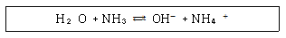
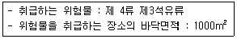
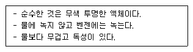

위험물산업기사 (2012-03-04 기출문제)
1과목: 일반화학
1. 다음 중 벤젠 고리를 함유하고 있는 것은?
- 아세틸렌
- 아세톤
- 메탄
- 아닐린
(정답률: 86%)

2. NaOH 1g 이 250mL 메스플라스크에 녹아 있을 때 NaOH 수용액의 농도는?
- 0.1N
- 0.3N
- 0.5N
- 0.7N
(정답률: 76%)
3. 금속은 열, 전기를 잘 전도한다. 이와 같은 물리적 특성을 갖는 가장 큰 이유는?
- 금속의 원자 반지름이 크다.
- 자유전자를 가지고 있다.
- 비중이 대단히 크다.
- 이온화 에너지가 매우 크다.
(정답률: 86%)
4. 발연황산이란 무엇인가?
- H2SO4의 농도가 98% 이상인 거의 순수한 황산
- 황산과 염산을 1:3 의 비율로 혼합한 것
- SO3를 황산에 흡수시킨 것
- 일반적인 황산을 총괄
(정답률: 82%)
5. 다음 물질 중에서 염기성인 것은?
- C6H5NH2
- C6H5NO2
- C6H5OH
- C6H5COOH
(정답률: 60%)
6. 어떤 온도에서 물 200g에 최대 설탕이 90g 이 녹는다. 이 온도에서 설탕의 용해도는?
- 45
- 90
- 180
- 290
(정답률: 76%)
7. 테르밋(thermit)의 주성분은 무엇인가?
- MG 와 Al2O3
- Al 과 Fe2O3
- Zn 과 Fe2O3
- Cr 와 Al2O3
(정답률: 64%)
8. 배수비례의 법칙이 적용 가능한 화합물을 옳게 나열한 것은?
- CO, CO2
- HNO3, HNO2
- H2SO4, H3SO3
- O2, O3
(정답률: 81%)
9. 다음 반응식에서 브뢴스테드의 산ㆍ염기 개념으로 볼 때 산에 해당하는 것은?

- NH3 와 NH4+
- NH3 와 OH
- H2O 와 OH-
- H2O 와 NH4+
(정답률: 73%)
10. 다음 물질 중 물에 가장 잘 용해되는 것은?
- 디에틸에테르
- 글리세린
- 벤젠
- 톨루엔
(정답률: 68%)
11. 납축전지를 오랫동안 방전시키면 어느 물질이 생기는가?
- Pb
- PbO2
- H2SO4
- PbSO4
(정답률: 62%)
12. 한 원자에서 네 양자수가 똑같은 전자가 2개 이상 있을 수 없다는 이론은?
- 네른스트의 식
- 파울리의 배타원리
- 패러데이의 법칙
- 플랑크의 양자론
(정답률: 70%)
13. 액체 0.2g 을 기화시켰더니 그 증기의 부피가 97℃ 740mmHg에서 80mL 였다. 이 액체의 분자량은?
- 40
- 46
- 78
- 121
(정답률: 78%)
14. H2O 가 H2S 보다 비등점이 높은 이유는 무엇인가?
- 분자량이 적기 때문에
- 수소결합을 하고 있기 때문에
- 공유결합을 하고 있기 때문에
- 이온결합을 하고 있기 때문에
(정답률: 89%)
15. 어떤 용기에 수소 1g 과 산소 16g을 넣고 전기불꽃을 이용하여 반응시켜 수증기를 생성하였다. 반응 전과 동일한 온도ㆍ압력으로 유지시켰을 때, 최종 기체의 총 부피는 처음 기체 총 부피의 얼마가 되는가?
- 1
- 1/2
- 2/3
- 3/4
(정답률: 46%)
16. 다음 중 끓는점이 가장 높은 물질은?
- HF
- HCl
- HBr
- Hl
(정답률: 67%)
17. PbSO4 의 용해도를 실험한 결과 0.045g/L 이었다. PbSO4의 용해도곱 상수(Ks)는? (단, PbSO4 의 분자량은 303.27 이다.)
- 5.5×10-2
- 4.5×10-4
- 3.4×10-6
- 2.2×10-8
(정답률: 55%)
18. FeCl3 의 존재하에서 톨루엔과 염소를 반응시키면 어떤 물질이 생기는가?
- O-클로로톨루엔
- p-살리실산메틸
- 아세트아닐리드
- 염화벤젠디아조늄
(정답률: 71%)
19. 다음 중 염기성 산화물에 해당하는 것은?
- 이산화탄소
- 산화나트륨
- 이산화규소
- 이산화황
(정답률: 68%)
20. 밑줄 친 원소의 산화수가 +5 인 것은?
- H3PO4
- KMnO4
- K2Cr2O7
- K3[Fe(CN)6]
(정답률: 80%)
2과목: 화재예방과 소화방법
21. 연소할때 자기연소에 의하여 질식소화가 곤란한 위험물은?
(오류 신고가 접수된 문제입니다. 반드시 정답과 해설을 확인하시기 바랍니다.)
- C3H5(ONO2)3
- C6H4(CH3)2
- CH3CHCH2
- C2H5OC2H5
(정답률: 66%)
22. 제4종 분말 소화약제의 주성분으로 옳은 것은?
- 탄산수소칼륨과 요소의 반응생성물
- 탄산수소칼륨과 인산염의 반응생성물
- 탄산수소나트륨과 요소의 반응생성물
- 탄산수소나트륨과 인산염의 반응생성물
(정답률: 73%)
23. 소화약제의 종류에 해당하지 않는 것은?
- CH2BrCl
- NaHCO3
- NH4BrO3
- CF3Br
(정답률: 71%)
24. 물을 소화약제로 사용하는 가장 큰 이유는?
- 기화잠열이 크므로
- 부촉매 효과가 있으므로
- 환원성이 있으므로
- 기화하기 쉬우므로
(정답률: 88%)
25. 표시색상이 황색인 화재는?
- A급 화재
- B급 화재
- C급 화재
- D급 화재
(정답률: 86%)
26. 제3종 분말 소화약제가 열분해 했을 때 생기는 부착성이 좋은 물질은?
- NH3
- HPO3
- CO2
- P2O5
(정답률: 78%)
27. 위험물제조소의 환기설비 설치 기준으로 옳지 않은 것은?
- 환기구는 지붕위 또는 지상 2m이상의 높이에 설치할 것
- 급기구는 바닥면적 150m2마다 1개 이상으로 할 것
- 환기는 자연배기방식으로 할 것
- 급기구는 높은 곳에 설치하고 인화방지망을 설치할 것
(정답률: 75%)
28. 이산화탄소 소화설비의 배관에 대한 기준으로 옳은 것은?
- 원칙적으로 겸용이 가능하도록 할 것
- 동관의 배관은 고압식인 경우 16.5MPa 이상의 압력에 견딜 것
- 관이음쇠는 저압식의 경우 5.0MPa 이상의 압력에 견디는 것일 것
- 배관의 가장 높은 곳과 낮은 곳의 수직거리는 30m 이하
(정답률: 55%)
29. 위험물의 화재발생시 사용하는 소화설비(약제)를 연결한 것이다. 소화효과가 가장 떨어진 것은?
- (C2H5)3Al - 팽창질석
- C2H5OC2H5 -CO2
- C6H2(NO2)3OH - 수조
- C6H4(CH3)2 - 수조
(정답률: 48%)
30. 동식물유류 400000L 의 소화설비 설치시 소요단위는 몇 단위인가?
- 2
- 4
- 20
- 40
(정답률: 74%)
31. 위험물제조소등의 스프링클러설비의 기준에 있어 개방형스프링클러헤드는 스프링클러헤드의 반사판으로부터 하방과 수평방향으로 각각 몇 m 의 공간을 보유하여야 하는가?
- 하방 0.3m, 수평방향 0.45m
- 하방 0.3m, 수평방향 0.3m
- 하방 0.45m, 수평방향 0.45m
- 하방 0.45m, 수평방향 0.3m
(정답률: 72%)
32. 제1류 위험물 중 알칼리금속과 산화물이 화재에 적응성이 있는 소화약제는?
- 인산염류분말
- 이산화탄소
- 탄산수소염류분말
- 할로겐화합물
(정답률: 75%)
33. 처마의 높이가 6m 이상인 단층 건물에 설치된 옥내저장소의 소화설비로 고려될 수 없는 것은?
- 고정식 포소화설비
- 옥내소화전설비
- 고정식 이산화탄소소화설비
- 고정식 할로겐화합물소화설비
(정답률: 78%)
34. 위험물제조소등에 설치된 옥외소화전설비는 모두 옥외소화전(설치개수가 4개 이상인 경우는 4개의 옥외소화전)을 동시에 사용할 경우에 각 노즐선단의 방수압력은 몇 KPa 이상이어야 하는가?
- 170
- 350
- 420
- 540
(정답률: 82%)
35. 위험물의 화재시 주수소화하면 가연성 가스의 발생으로 인하여 위험성이 증가하는 것은?
- 황
- 염소산칼륨
- 인화칼슘
- 질산암모늄
(정답률: 75%)
36. 알루미늄분의 연소시 주수소화하면 위험한 이유는?
- 물에 녹아 산이 된다
- 물과 반응하여 유독 가스를 발생한다
- 물과 반응하여 수소 가스를 발생한다.
- 물과 반응하여 산소 가스를 발생한다.
(정답률: 76%)
37. 위험물의 취급을 주된 작업내용으로 하는 다음의 장소에 스프링클러설비를 설치할 경우 확보하여야 하는 1분장 방사밀도는 몇 L/m2 이상이어야 하는가? (단, 내화구조의 자닥 및 벽에 의하여 2개의 실로 구획되고, 각 실의 바닥면적은 500 m2 이다.)

- 8.1
- 12.2
- 13.9
- 16.4
(정답률: 57%)
38. 고체가연물의 연소형태에 해당하지 않는 것은?
- 등심연소
- 증발연소
- 분해연소
- 표면연소
(정답률: 85%)
39. 위험물제조소등에 설치하는 자동화재탐지설비의 설치기준으로 틀린 것은?
- 원칙적으로 경계구역은 건축물의 2 이상의 층에 걸치지 아니하도록 한다.
- 원칙적으로 상층이 있는 경우에는 감지기 설치를 하지 않을 수 있다.
- 원칙적으로 하나의 경계구역의 면적은 600m3 이하로 하고 그 한 변의 길이는 50m 이하로 한다.
- 비상전원을 설치하여야 한다.
(정답률: 74%)
40. A약제인 NaHCO3 와 B약제인 Al2(SO4)3 로 되어 있는 소화기는?
- 산ㆍ알칼리소화기
- 드라이케이칼소화기
- 탄산가스소화기
- 화학포소화기
(정답률: 56%)
3과목: 위험물의 성질과 취급
41. 디에틸에테르의 성질 및 저장, 취급할 때 주의사항으로 틀린 것은?
- 장시간 공기와 접촉하면 과산화물이 생성되어 폭발위험이 있다.
- 연소범위는 가솔린보다 좁지만 발화점이 낮아 위험하다.
- 정전기 생성방지를 위해 약간의 CaCl2를 넣어준다.
- 이산화탄소소화기는 적응성이 있다.
(정답률: 65%)
42. 황린을 밀폐용기 속에서 260℃ 로 가열하여 얻은 물질을 연소시킬 때 주로 생성되는 물질은?
- P2O5
- CO2
- PO2
- CuO
(정답률: 86%)
43. CS2 를 물속에 저장하는 주된 이유는 무엇인가?
- 불순물을 용해시키기 위하여
- 가연성 증기의 발생을 억제하기 위하여
- 상온에서 수소 가스를 방출하기 때문에
- 공기와 접촉하면 즉시 폭발하기 때문에
(정답률: 84%)
44. 위험물안전관리법에 의한 위험물 분류상 제1류 위험물에 속하지 않는 것은?
- 아염소산염류
- 질산염류
- 유기과산화물
- 무기과산화물
(정답률: 79%)
45. 적린의 위험성에 대한 설명으로 옳은 것은?
- 발화 방지를 위해 염소산칼륨과 함께 보관한다.
- 물과 격렬하게 반응하여 열을 발생한다.
- 공기 중에 방치하면 자연발화한다.
- 산화재와 혼합할 경우 마찰ㆍ충격에 의해서 발화한다.
(정답률: 71%)
46. 질산에틸의 성상에 관한 설명 중 틀린 것은?
- 향기를 갖는 무색의 액체이다.
- 휘발성 물질로 증기 비중은 공기보다 작다.
- 물에는 녹지 않으나 에테르에 녹는다.
- 비점 이상으로 가열하면 폭발의 위험이 있다.
(정답률: 48%)
47. 위험물안전관리법령상 위험물의 운반용기 외부에 표시해야 하는 사항이 아닌 것은? (단, 기계에 의하여 하역하는 구조로 된 운반 용기는 제외한다.)
- 위험물의 품명
- 위험물의 수량
- 위험물의 화학명
- 위험물의 제조년월일
(정답률: 75%)
48. 알킬알루미늄에 대한 설명 중 틀린 것은?
- 물과 폭발적 반응을 일으켜 발화되므로 비산하는 위험물이 있다.
- 이동저장탱크는 외면을 적색으로 도장하고, 용량은 1900L 미만으로 저장한다.
- 화재시 발생되는 흰 연기는 인체에 유해하다.
- 탄소수가 4개까지는 안전하나 5개 이상으로 증가할수록 자연발화의 위험성이 증가한다.
(정답률: 66%)
49. 옥외탱크저장소에서 취급하는 위험물의 최대수량에 따른 보유 공지너비가 틀린 것은? (단, 원칙적인 경우에 한한다.)
- 지정수량 500배 이하 3m 이상
- 지정수량 500배 초과 1000배 이하 - 5m 이상
- 지정수량 1000배 초과 2000배 이하 - 9m 이상
- 지정수량 2000배 초과 3000배 이하 - 15m 이상
(정답률: 86%)
50. 1기압에서 인화점이 21℃ 이상 70℃ 미만인 품명에 해당하는 물품은?
- 벤젠
- 경유
- 니트로벤젠
- 실린더유
(정답률: 68%)
51. 다음 [보기]에서 설명하는 위험물은?

- 아세트알데히드
- 디메틸에테르
- 아세톤
- 이황화탄소
(정답률: 60%)
52. P4S3 이 가장 잘 녹는 것은?
- 염산
- 이황화탄소
- 황산
- 냉수
(정답률: 60%)
53. 위험물의 저장 및 취급에 대한 설명이 틀린 것은?
- H2O2 : 직사광선을 차단하고 찬 곳에 저장한다.
- MgO2:습기의 존재하에서 산소를 발생하므로 특히 방습에 주의한다.
- NaNO3:조해성이 크고 흡습성이 강하므로 습도에 주의한다.
- K2O2:물속에 저장한다.
(정답률: 84%)
54. 다음 물질 중 증기비중이 가장 작은 것은?
- 이황화탄소
- 아세톤
- 아세트알데히드
- 디에틸에테르
(정답률: 60%)
55. 제5류 위험물의 일반적인 취급 및 소화방법으로 틀린 것은?
- 운반용기 외부에는 주의사항으로 화기엄금 및 충격주의 표시를 한다.
- 화재시 소화방법으로는 질식소화가 가장 이상적이다.
- 대량 화재시 소화가 곤란하므로 가급적 소분하여 저장한다.
- 화재시 폭발의 위험성이 있으므로 충분한 안전거리를 확보하여야 한다.
(정답률: 74%)
56. 위험물제조소 건축물의 구조 기준이 아닌 것은?
- 출입구에는 갑종방화문 또는 을종방화물을 설치할 것
- 지붕은 폭발력이 위로 방출될 정도의 가벼운 불연재료로 덮을 것
- 벽ㆍ기둥ㆍ바닥ㆍ보ㆍ서까래 및 계단은 불연재료로 하고 연소 우려가 있는 외벽은 개구부가 없는 내화구조로 할 것
- 산화성고체, 가연성고체 위험물을 취급하는 건축물의 바닥은 위험물이 스며들지 못하는 재료를 사용할 것
(정답률: 69%)
57. 지정수량 10배 이상의 위험물을 운반할 때 혼재가 가능한 것은?
- 제1류와 제2류
- 제2류와 제6류
- 제3류와 제5류
- 제4류와 제2류
(정답률: 82%)
58. 옥내저장탱크와 탱크전용실의 벽과의 사이 및 옥내저장탱크의 상호간에는 몇 m 이상의 간격을 유지하여야 하는가?
- 0.3
- 0.5
- 1.0
- 1.5
(정답률: 75%)
59. 동식물유류를 취급 및 저장할 때 주의사항으로 옳은 것은?
- 아마인유는 불건성유이므로 옥외저장시 자연발화의 위험이 없다.
- 요오드가가 130이상인 것은 섬유질에 스며들어 있으므로 자연 발화의 위험이 있다.
- 요오드가가 100이상인 것은 불건성유이므로 저장할 때 주의를 요한다.
- 인화점이 상온이상이므로 소화에는 별 어려움이 없다.
(정답률: 74%)
60. 황린의 보존 방법으로 가장 적합한 것은?
- 벤젠 속에서 보존한다.
- 석유 속에서 보존한다.
- 물 속에 보존한다.
- 알코올 속에 보존한다.
(정답률: 82%)